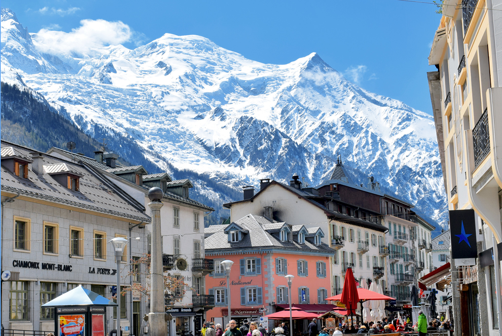

Chamonix
Chamonix-Mont-Blanc, communément appelé Chamonix, est une destination emblématique située dans les Alpes françaises, au pied du mont Blanc, le plus haut sommet d'Europe occidentale. Renommée dans le monde entier pour son incroyable beauté naturelle et ses activités de montagne, Chamonix est un véritable paradis pour les amoureux de la nature et les passionnés d'aventure.
La première chose qui frappe les visiteurs à Chamonix est l'impressionnante chaîne de montagnes qui l'entoure. Le mont Blanc domine le paysage de manière majestueuse, offrant une toile de fond spectaculaire à la ville. Les paysages alpins environnants sont à couper le souffle, avec des sommets enneigés, des glaciers imposants, des vallées verdoyantes et des cascades dévalant les pentes.
En somme, Chamonix est une destination incontournable pour les amoureux de la montagne, offrant un mélange unique de paysages époustouflants, d'aventure en plein air et de charme alpin. Que ce soit pour les sports d'hiver, la randonnée estivale ou simplement pour s'émerveiller devant la beauté de la nature, Chamonix est un lieu qui ne manquera pas de captiver et d'inspirer les visiteurs du monde entier
.jpg)